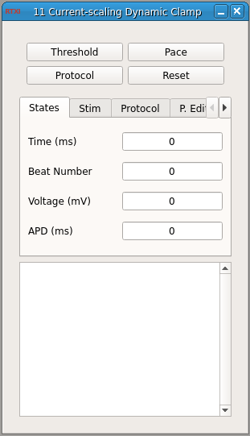

Requirements: None
Limitations: None

This module is used to inject artificial conductances into a guinea pig cardiomyocytes through dynamic current clamp. An embedded guinea pig ventricular cardiomyocyte model is voltage clamped to the membrane potential of a patch clamped cardiomyocyte. Using one of the calculated currents of the model, an artificial current is scaled and injected into the patch clamped cell. This allows for artificial block or increase of a particular current through dynamic clamp. Currently, the Livshitz Rudy 2009 and Faber Rudy 2000 guinea pig models have been implemented in the module.
The module runs in three different modes. The first mode, toggled through the "Threshold" button, will perform a simple test to estimate the current threshold needed to elicit an action potential. This threshold is then scaled by 1.5 and set to the stimulation magnitude. The second mode is "Pace". This mode will pace the cell at a static BCL based on the parameters under "Stimulation Parameters". The third mode is the protocol mode, toggled through the "Protocol" button. In this mode, the module will run the protocol set through the protocol editor, which is explained below. Users can also set the parameters used to calculated action potential duration and if the protocol will be run multiple times. The data recorder can be remotely started by checking the "Record Data" checkbox under the "Protocol" tab. When static pacing or a protocol is started, the data recorder is remotely started. This allows the data recording to be in sync with the beginning and end of a protocol. When multiple trials are being run, the data recorder will start and stop between each trial, automatically appending a new trial to the HDF5 file.
The protocol editor, found in the "P. Edit" tab, allows the building of a protocol made up of several different steps. These steps can be static pacing, fixed diastolic interval, or dynamic current clamp. By clicking the "Add Step" button of the protocol editor, a prompt will appear. The type of step is chosen, and the required parameters will need to be inputted. For "Current Scaling" steps, the "Current to Scale" must be inputted with a "Scaling Percentage". The currents available to scale are - "INa", "IKr", "IKs", "ICaL", "ICaT", "INaK", and "IK1". Note, this parameter is case sensitive. The "Scaling Percentage" is used to increase or decrease the current injected into the cell. A "Scaling Percentage" of 0 will result in no injection (0% change), -50 will result in a 50% decrease, and 25 will result in a 25% increase. During a "Current Scaling" step, the model will be voltage clamped to the membrane potential of the cell through the modules input channel. The scaled current will then be injected into the target cell, which is in turn scaled by the target cell's membrane capacitance. When the model is active can be controlled through the protocol editor with the "Model: Start", "Model: Stop", and "Model: Reset" steps. This allows voltage clamping of the model to start before current scaling is active in order to eliminate transients.
Faber GM, Rudy Y. "Action potential and contractility changes in Na+i overloaded cardiac myocytes: a simulation study". Biophys J. 2000 May;78(5):2392-404. Livshitz LM, Rudy Y. "Uniqueness and stability of action potential models during rest, pacing, and conduction using problem-solving environment". Biophys J. 2009 Sep 2;97(5):1265-76.